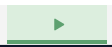

Building Tic-Tac-Toe Game Using Python
July 27 2020/Sayak Das
What is Terminal App?
A terminal application is an application that runs in Terminal or command Line. It interact with users via command line and also shows it output via terminal.To run a terminal application user needs to type some command in terminal/commandLine.Here we are goimg to make a simple terminal tic-tac-toe game by using python.Installing Python3 in your system
As my code is written in python3 if python is not installed in your system you can install it.I am giving a link of my article about how to install python3(latesr version) in linux and windows.Here is the link:
Installation & SetUp of latest version ofPython3 in your system
About my Tic-Tac-Toe Application:
It is a simple 2 players terminal application. The game starts like below:
_____=====*****WELCOME TO MATCH OF TIK-TAK-TOE*****=====_____
Press Enter to start the game.....
Then it asks how many numbers of match you want to play and name of two opponent palyers.
Enter Number of match you want...10
Name of first player...Sayak Das
Name of second player...
Then my application makes a toss and choose a random player to start first
Let's make a toss.....
press Enter to see result......
________________Congratulation Sayak Das wins the toss
As Sayak Das wins the toss he will come first and 'cross' is your....
Press Enter to start the game.........
Then the game starts. You can choose your position by simple entering respective position number from keyboard
| |
1 | 2 | 3
_____|_____|_____
| |
4 | 5 | 6
_____|_____|_____
| |
7 | 8 | 9
| |
Sayak Das's turn....
Enter the number denoting the postion....5
| |
1 | 2 | 3
_____|_____|_____
| |
4 | X | 6
_____|_____|_____
| |
7 | 8 | 9
| |
Maruti's turn....
Enter the number denoting the postion....1
| |
@ | 2 | 3
_____|_____|_____
| |
4 | X | 6
_____|_____|_____
| |
7 | 8 | 9
| |
Sayak Das's turn....
Enter the number denoting the postion....
After all sets the winner will be decided by computer
_____=====*****MARUTI is WINNER*****=====_____
Here is a short video of my application:
Play yourself
Below accually you can play my game.It may work slowly due to internet problem.
Just click on  button below to start the game
Let's Play . . .